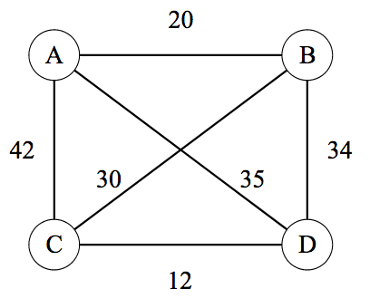
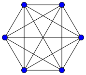
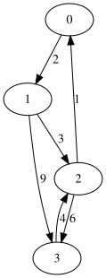
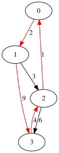
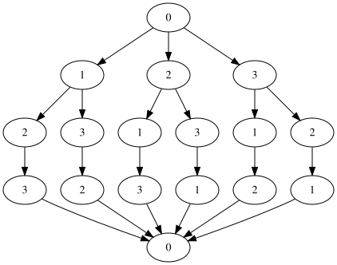
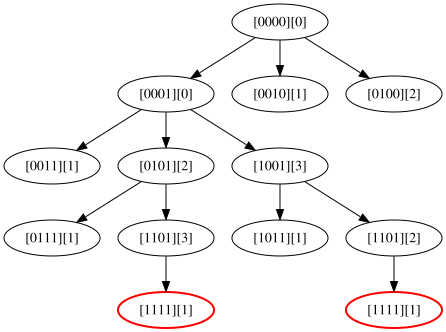

Travelling salesman problem (TSP) is a classic NP hard computer algorithmic problem. In this series, we will first solve TSP problem in an exact manner by ACing TSP on aizu with dynamic programming, and then move on to train a Pointer Network with Pytorch to obtain an approximate solution with deep learning and reinforcement learning technology. Complete episodes are listed as follows:
Episode 1: AC TSP on AIZU with recursive DP
Episode 2: TSP DP on a Euclidean Dataset
Episode 3: Pointer Networks in PyTorch
Episode 4: Search for Most Likely Sequence
TSP Problem Review
TSP can be modelled as a graph problem where both directed and undirected graphs and both completely or partially connected graphs are applicable. The following picture in Wikipedia TSP is an undirected but complete TSP with four vertices, A, B, C, D. TSP requries a tour with minimal total distance, starting from arbitrarily picked vertex and ending with the same node while covering all vertices exactly once. For example, $A \rightarrow B \rightarrow C \rightarrow D \rightarrow A$ and $A \rightarrow C \rightarrow B \rightarrow D \rightarrow A$ are valid tours and among all tours there is only one minimal distance value (though multiple tours with same minimum may exist).

Despite different types of graphs, notice that we can always employ an adjacency matrix to represent a graph. The above graph can thus be represented by this matrix
Of course, typically, TSP problem takes the form of n cooridanates in a plane, corresponding to complete and undirected graph, because in plane every pair of vertices has one connected edge and the edge has same distance in both directions.

AIZU TSP Online Judge
AIZU has a TSP problem where a directed and incomplete graph with V vertices and E directed edges is given, and the output expects minimal total distance. For example below having 4 vertices and 6 edges.

This test case has minimal tour distance 16, with corresponding tour being $0\rightarrow1\rightarrow3\rightarrow2\rightarrow0$, as shown in red edges. However, the AIZU problem may not have a valid result because not every pair of vertices is guaranteed to be connected. In that case, -1 is required, which can also be interpreted as infinity.

Brute Force Solution
A naive way is to enumerate all possible routes starting from vertex 0 and keep minimal total distance ever generated. Python code below illustrates a 4 point vertices graph.
1 | from itertools import permutations |
The possible routes are
1 | [0, 1, 2, 3, 0] |
This approach has a runtime complexity of O($n!$), which won’t pass AIZU.

Dynamic Programming
To AC AIZU TSP, we need to have acceleration of the factorial runtime complexity by using bitmask dynamic programming.
First, let us map visited state to a binary value. In the 4 vertices case, it’s “0110” if node 2 and 1 already visited and ending at node 1. Besides, we need to track current vertex to start from. So we extend dp from one dimension to two dimensions $dp[bitstate][v]$. In the example, it’s $dp[“0110”][1]$.
The transition formula is given by
$$
dp[bitstate][v] = \min ( dp[bitstate \cup {u}][u] + dist(v,u) \mid u \notin bitstate )
$$
The resulting time complexity is O($n^2*2^n$ ), since there are $2^n * n$ total states and for each state one more round loop is needed. Factorial and exponential functions are significantly different.
| $n!$ | $n^2*2^n$ | |
|---|---|---|
| n=8 | 40320 | 16384 |
| n=10 | 3628800 | 102400 |
| n=12 | 479001600 | 589824 |
| n=14 | 87178291200 | 3211264 |
Pause a second and think about why bitmask DP works here. Notice there are lots of redundant sub calls, one of which is hightlighted in red ellipse below.

In this episode, a straightforward top down memoization DP version is given in Python 3 and Java 8. Benefit of top down DP approach is that we don’t need to consider topological ordering when permuting all states. Notice that there is a trick in Java, where each element of dp is initialized as Integer.MAX_VALUE, so that only one statement is needed to update new dp value.
1 | res = Math.min(res, s + g.edges[v][u]); |
However, the code simplicity is at cost of clarity and care should be taken when dealing with actual INF (not reachable case).
In python version, we could have used the same trick, perhaps by intializing with a large long value representing INF. But for clarity, we manually handle different cases in if-else statements and mark intial value as -1 (INT_INF).
1 | INT_INF = -1 |
Below is complete AC code in Python 3 and Java 8. Also can be downloaded on github.
AIZU Java 8 Recursive Version
1 | // passed http://judge.u-aizu.ac.jp/onlinejudge/description.jsp?id=DPL_2_A |
AIZU Python 3 Recursive Version
1 | from typing import List |
Comments
shortnamefor Disqus. Please set it in_config.yml.